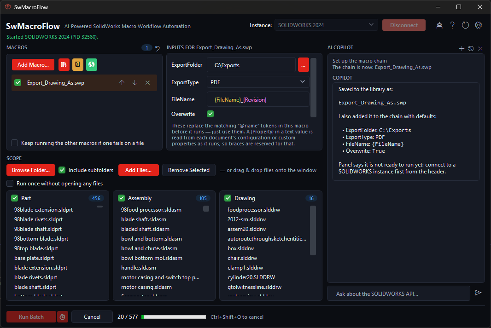

Chain multiple macros
Queue as many macros as you need, in the order they should run. Each selected file opens once, every ticked macro runs against it, then the file closes.
Batch SOLIDWORKS macro runner
Run chains of SOLIDWORKS VBA macros across hundreds of parts, assemblies, and drawings. No SOLIDWORKS add-in. No registration. Just a focused Windows tool for repeat work.
Free for everyone. No registration or access key.

SwMacroFlow keeps the workflow obvious: choose files, choose macros, review the run, then let SOLIDWORKS do the repetitive work.
Queue as many macros as you need, in the order they should run. Each selected file opens once, every ticked macro runs against it, then the file closes.
Browse a folder recursively, drag and drop, or add files one by one. Parts, assemblies, and drawings are sorted automatically.
Ask Copilot to build a macro chain, scan a folder, or write a new macro. Destructive actions require your approval first.
SwMacroFlow joins a SOLIDWORKS session you already have open, or starts one, without installing anything into SOLIDWORKS itself.
Use ready-to-run macros for common jobs such as export and cleanup, while keeping your own VBA macros beside them.
Save a setup and run it later through Windows Task Scheduler: once, daily, weekly, monthly, or every N minutes.
New builds can be delivered through the app's auto-updater when updates are available.
Get the latest Windows installer directly from the public GitHub release page.
SwMacroFlow uses a per-user install, so no administrator rights and no elevation prompt are required.
Open the app and connect it to any installed and licensed x64 SOLIDWORKS version.
Add macros, point at a folder, hit Run Batch, or ask Copilot to help build the workflow.
SwMacroFlow runs macros you supply against files you choose. Save work and keep backups before large batches.
The app does not collect CAD files, macro code, batch results, folder paths, file names, or SOLIDWORKS activity.
Install it on the Windows computers where you need it, while using your own licensed SOLIDWORKS installation.
Use the docs for setup, or contact support for installation issues, app bugs, and the bundled macro library.
SwMacroFlow works with any installed and licensed x64 SOLIDWORKS version. It joins the SOLIDWORKS session on your machine rather than shipping its own.
Download the Windows installer directly from the release page. SwMacroFlow is free for everyone, with no registration or access request needed.
No. SwMacroFlow does not require sign-in, registration, or an access key.
Yes. There is no SwMacroFlow seat limit. Install it on the Windows machines where you need it, while using your own licensed SOLIDWORKS installation.
Yes. New builds can be delivered through the app's built-in auto-updater when updates are available.
Yes. SwMacroFlow can register saved setups with Windows Task Scheduler for one-time, daily, weekly, monthly, or every-N-minute runs.
No. SwMacroFlow uses a per-user installation and is designed to run without an administrator elevation prompt.
No. It runs as a separate application and drives SOLIDWORKS from outside, so there is no add-in to register or unregister.